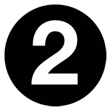

CS4740 Cloud Computing
Neal Magee, Ph.D.
Solution Architect, Research Computing
University of Virginia, Fall 2020
Amazon Web Services (AWS)
AWS Educate is Amazon's program to provide students comprehensive resources for building skills in the cloud. It is a no-cost curriculum providing access to content, training, pathways, AWS services, and the AWS Educate Job Board with employment opportunities.
There are two ways that AWS Educate benefits this course:
AWS Accounts - Students will be using AWS accounts provided for them for hands-on work in this course. These "starter accounts" are bound to an AWS classroom for CS4740 and will be pre-funded with approximately $50-70 worth of credit. We will also make use of AWS Academy Learner Labs, a new sandbox platform from AWS for hands-on learning during the semester. You will receive an invitation from AWS Educate as the start of class approaches (early-to-mid August). Once you receive that invitation, please follow the instructions to join AWS Educate and practice signing into the AWS console through Vocareum.
NOTE: Students are welcome to use their own AWS accounts (if they have one), but AWS no longer offers student promotional credits. Therefore, if you choose this option all operational costs are your own. This will likely be less than $40 for the semester.
Supplemental Training - AWS Educate also provides templates, tutorials, video and written training material on most common AWS services, as well as curricula to prepare for AWS certification exams.
Learn More about AWS Educate
Students should complete this setup and be able to access the AWS Console by the end of the first week of class.